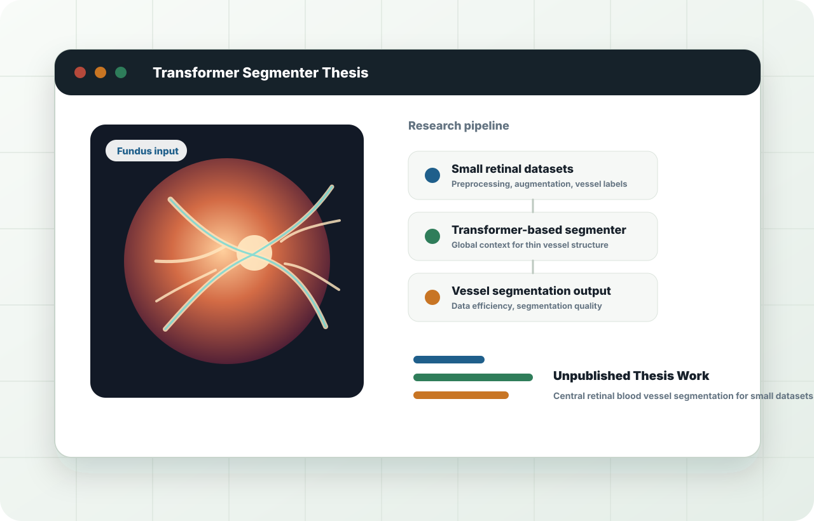

Primary focus | Computer vision research
Data-efficient vision models for medical imaging.
My thesis and research assistant work focused on Transformer-based segmentation for small medical image datasets, especially retinal blood vessel segmentation. The work connects preprocessing, model architecture, evaluation, and publication-level experimentation.
Medical imaging
Fundus images and retinal vessel structure
Model research
Transformer-based segmentation under limited data
Publication
ICCIT 2023 paper on color fundus photographs
Computer Vision
Medical Imaging
Transformers
Segmentation